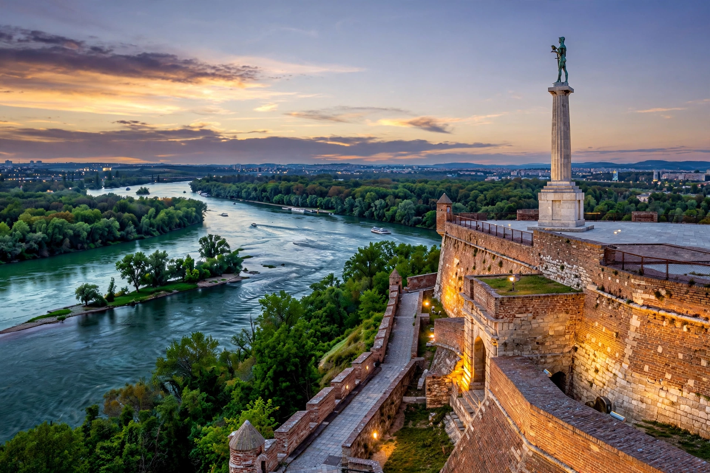

[Image placeholder: Kalemegdan Fortress at the confluence of the Sava and Danube]| Country | Serbia |
|---|---|
| Confluence | Sava and Danube rivers |
| Population | About 1.7 million (metro) |
| Founded | Singidunum — Celtic and Roman; Slavic name from 9th century |
**Belgrade** (Serbian: Beograd, 'white city') is the capital and largest city of Serbia, standing at the confluence of the Sava and Danube rivers where the Pannonian Plain meets the Balkan hills. One of Europe's oldest continuously inhabited cities, it has been destroyed and rebuilt dozens of times as empires fought over its strategic fortress.
The Kalemegdan Fortress above the rivers, the bohemian Skadarlija street, the vast Church of Saint Sava — one of the world's largest Orthodox churches — and the socialist-era blocks of New Belgrade across the Sava define the modern city, which is also known for its nightlife on river barges (splavovi).
Celtic Singidunum became a Roman legionary base, then passed between Byzantines, Bulgars, Hungarians, Serbs and Ottomans; the Ottoman conquest of 1521 made it a major imperial city. Serbia's capital from the nineteenth century, Belgrade became capital of Yugoslavia in 1918, was bombed in both world wars and again by NATO in 1999.
Since 2000 Belgrade has attracted tourism and tech investment; the Belgrade Waterfront project is remaking the Sava bank, controversially clearing the old Savamala district. The city hosts the Nikola Tesla Museum honouring its famous inventor.